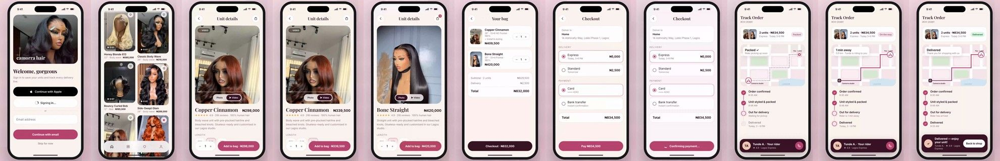

The brief
Camorra Hair sells custom human-hair units styled in its Lagos studio. A wig is a ₦165,000 to ₦455,000 purchase, so buyers want to see the hair move before they pay, and they want to know exactly where their unit is once it leaves the studio.
What I designed
- Video-first catalogue: every unit has a 7-second clip, with a Photo / Video toggle on the detail page.
- Length selector (20", 24", 28") that updates the price and the Add to bag button live.
- Checkout with Express or Standard delivery and Card or Bank transfer, priced in naira.
- Order tracking from Packed to Out for delivery to Delivered, with a map and the rider's name.
- StartSign in or skip
- BrowseVideo catalogue
- DetailLength & quantity
- BagSubtotal + delivery
- CheckoutCard or transfer
- TrackRider to doorstep
11 screens, one path from first look to delivered.

The full flow. Scroll sideways to see every screen.
“Body wave unit with pre-plucked hairline. Glueless-ready and customised in our Lagos studio.”
Product copy written in the brand's voice.